01 — ABOUT
해방런처는 이런 런처예요What HB Launcher is
게임을 실물 같은 3D 케이스로 진열해 두고, 케이스를 열어 매체를 꺼내 본체에 꽂듯 골라 실행하는 에뮬레이터 런처입니다. Windows · Android 둘 다 같은 화면입니다.An emulator launcher that shelves your games as true-to-life 3D cases — open a case, pull out the cartridge or disc, slot it in and play. Windows and Android look the same.

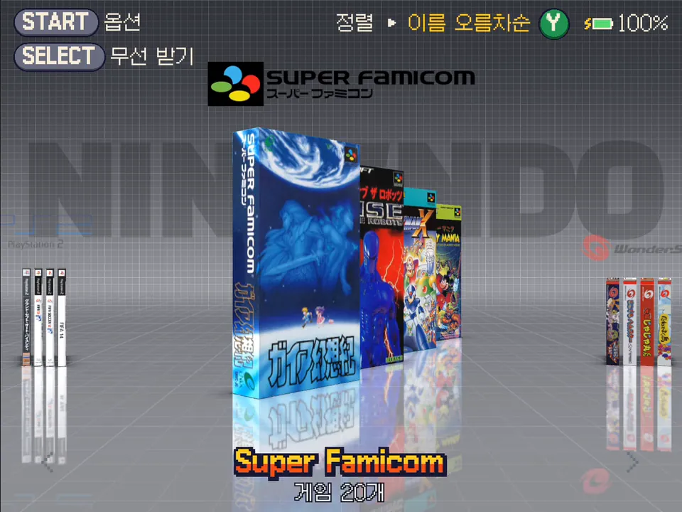

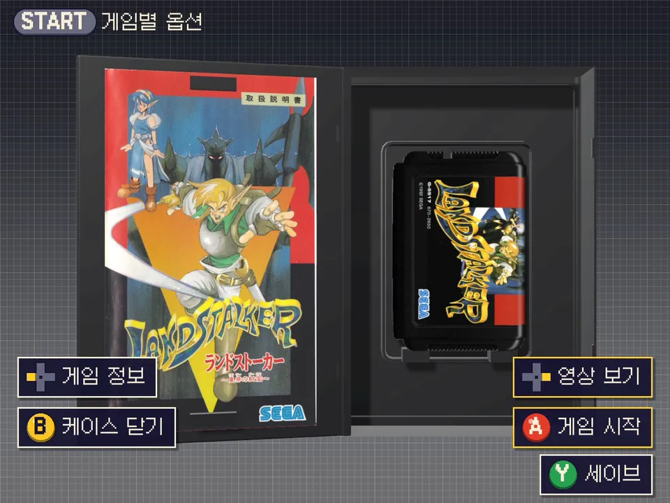
- 55개 기종의 케이스 · 카트리지 · 디스크 모양을 그대로 — 앞표지 · 뒷표지 · 책등까지55 systems with their real case, cartridge and disc shapes — front, back and spine
- 케이스를 열면 영상이 내장 브라운관에서 돌고, 게임 정보도 바로 봅니다.Open a case and its video plays on a built-in CRT, with the game info a press away.
- RetroArch(해방레트로아크 포함)와 단독 에뮬레이터를 시스템 · 게임마다 고릅니다.RetroArch (HB RetroArch included) or standalone emulators, chosen per system or per game.
- 라이브러리는 해방툴이 채웁니다 — 런처가 스스로 롬을 훑어 등록하지는 않습니다.The library comes from the Rom Tool — the launcher doesn't scan ROMs itself.
무엇을 하고 싶으세요?What do you want to do?
02 — INSTALL
설치 · 업데이트Install and update
HB런처 페이지의 받기에서 Windows 는 무료 zip, Android 는 구매한 APK 코드로 받습니다.Get it from the HB Launcher download section: a free zip for Windows, and an APK with your purchased APK code for Android.
WindowsWindows
- zip 을 원하는 폴더에 풀고 hblauncher.exe를 실행합니다(설치 과정 없음).Unzip anywhere and run hblauncher.exe — no installer.
- 설정 · 즐겨찾기는 exe 옆 userdata, 라이브러리는 exe 옆 HBLauncher 폴더에 들어갑니다.Settings and favourites live in userdata and the library in HBLauncher, both next to the exe.
- 업데이트 — 새 zip 을 같은 폴더에 풀어 덮어쓰면 라이브러리 · 설정이 그대로 남습니다.Updating — unzip the new version over the old files; the library and settings stay.
AndroidAndroid
- APK 코드(HBL-XXXX-XXXX-XXXX)를 구매하고, HB런처 페이지의 코드로 APK 받기에서 받습니다. 한 코드로 새 버전을 계속, 몇 대에든 설치할 수 있습니다.Buy an APK code (HBL-XXXX-XXXX-XXXX) and download with Get the APK with your code. One code keeps working for new versions, on any number of devices.
- 설치한 뒤 첫 화면의 "저장소 접근 권한" 줄에서 A → 모든 파일 접근을 허용합니다. 해방툴로 USB 연결하면 이 권한을 알아서 켜 줍니다.After installing, press A on the storage permission line and allow All files access. Connecting from the Rom Tool over USB turns it on for you.
- 업데이트 — 지금 앱 위에 새 APK 를 덮어 설치합니다(라이브러리 · 설정 유지). 해방툴의 도구 › APK 관리에서 설치 한 번으로도 됩니다.Updating — install the new APK over the current one (library and settings stay), or press Install in the Rom Tool's Tools › APK.
- Android 8.0 이상에서 돌아갑니다. 전자상가는 Android 10 이상이 필요합니다.Runs on Android 8.0+; the Retro Mall needs Android 10+.
- 낮은 버전으로 덮어 설치는 안 됩니다(되돌리려면 지우고 다시 설치 — 즐겨찾기 · 설정이 지워짐).You can't install an older version over a newer one — reinstalling from scratch clears favourites and settings.
- 안드로이드 TV — 게임 앱 목록에 나오고, 리모컨 ≡ 버튼이 옵션입니다. 권한 화면이 없는 TV 는 해방툴의 무선 adb로 연결하면 권한이 켜집니다.Android TV — appears in the games row; the remote's ≡ opens options. TVs without a permission screen get it enabled when the Rom Tool connects over Wireless adb.
- 홈 앱으로 쓰기 — 옵션 › 홈 런처 › 홈 런처로 설정. 게임기를 켜면 바로 해방런처가 뜹니다.As your home app — Options › Home launcher › Set as home, so the handheld boots straight into it.
03 — LIBRARY
게임 채우기Filling the shelf
해방툴에서 ⬆ 내보내기 → HB런처 내보내기로 보냅니다. 표지 · 3D 케이스 · 매체 그림 · 영상까지 해방툴이 만들어 줍니다.In the Rom Tool, ⬆ Export → HB Launcher export. It builds the covers, 3D cases, media art and video for you.
| 방법How | 이렇게Steps | 특징Notes |
|---|---|---|
| USB (유선)USB (wired) | 해방툴 [안드로이드] → [유선 연결 (ADB)] → 기기 연결Rom Tool [Android] → [Wired (ADB)] → Connect device | 가장 빠르고 확실합니다. 런처에 "받는 중 n / m"이 뜨고, 끝나면 목록을 알아서 다시 읽습니다.Fastest and surest. The launcher shows "receiving n / m" and reloads the list when done. |
| 무선 받기 (Android)Wireless receive (Android) | 런처 시스템 화면에서 SELECT → 무선 받기 켜기 → 해방툴 [무선 연결 (APP)] → 자동 찾기Launcher system screen SELECT → wireless receive on → Rom Tool [Wireless (APP)] → Auto find | 케이블 없이, IP 입력 없이. 화면을 꺼도 계속 받습니다.No cable, no IP to type. Keeps receiving with the screen off. |
| 내 컴퓨터 (Windows)This PC (Windows) | 해방툴 [내 컴퓨터 (Windows)] → 해방런처 위치 (hblauncher.exe) 고르기Rom Tool [This PC (Windows)] → pick HB Launcher location (hblauncher.exe) | 롬은 복사하지 않고 원래 자리를 씁니다.ROMs aren't copied — they stay where they are. |
| 바로실행 (Windows)Direct run (Windows) | 해방툴 시스템 목록 위 HB런처Rom Tool HB Launcher above the systems | 아무것도 복사하지 않고 해방툴 라이브러리로 바로 켭니다.Opens straight on the Rom Tool library, copying nothing. |

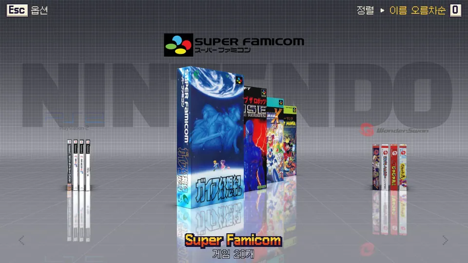
- 라이브러리 자리(Android) — SD 카드의 HBLauncher, 없으면 내부 저장소. 어디를 읽는지는 옵션 › 정보에서 봅니다.Library location (Android) — HBLauncher on the SD card, otherwise internal storage. Options › Info shows which.
- 롬이 없는 게임은 목록에서 숨깁니다(0.7.8~). 보고 싶으면 옵션 › 화면 › 롬 없는 게임 표시.Games without a ROM on this device are hidden (0.7.8+). To see them, Options › Display › show games without ROMs.
- 다시 읽기 — 옵션 › 정보 › 라이브러리 다시 읽기. 전송이 끝나면 알아서 다시 읽습니다.Reload — Options › Info › Reload library; it also reloads by itself after a transfer.
04 — CONTROLS
조작법Controls
패드 · 키보드 · 터치 모두 됩니다. 패드를 꽂으면 화면 안내가 패드 버튼 그림으로 바뀝니다.Pad, keyboard and touch all work. Plug in a pad and the on-screen hints switch to pad buttons.
| 패드Pad | 키보드 (Windows)Keyboard (Windows) | 하는 일Does |
|---|---|---|
| AA | Enter · SpaceEnter · Space | 열기 · 확인 · 게임 시작Open, confirm, start |
| BB | BackspaceBackspace | 뒤로 · 케이스 닫기Back, close case |
| XX | FF | 게임 목록에서 체크Check a game in the list |
| YY | OO | 정렬 바꾸기 · (케이스 안) 세이브 창Change sort · (in a case) save window |
| STARTSTART | EscEsc | 옵션Options |
| SELECTSELECT | / · Ctrl+F/ · Ctrl+F | 게임 검색 · (시스템 화면) 무선 받기Search · (system screen) wireless receive |
| L1 R1L1 R1 | PgUp · PgDnPgUp · PgDn | 10칸씩 건너뛰기(누르고 있으면 점점 빨라짐)Jump 10 at a time (speeds up when held) |
- 터치(폰 · 패드 없는 기기) — 밀어서 넘기고, 가운데를 탭하면 A, 옆을 탭하면 그리로 옮겨 갑니다. 안내 줄 · 옵션 줄도 탭됩니다. 뒤로는 안드로이드 뒤로가기.Touch (phones, devices without a pad) — swipe to scroll, tap the centre for A, tap the side to move there. Hint and option rows are tappable; back is Android's back.
- 마우스(Windows) — 끌어서 케이스를 돌려 보고, 오른쪽 클릭으로 원래 자세로.Mouse (Windows) — drag to spin a case, right-click to reset it.
- A/B · X/Y 바꾸기 — 옵션 › 화면. 닌텐도식 · 엑스박스식 배치에 맞춥니다.Swap A/B and X/Y — Options › Display, for Nintendo- or Xbox-style layouts.
화면마다Screen by screen

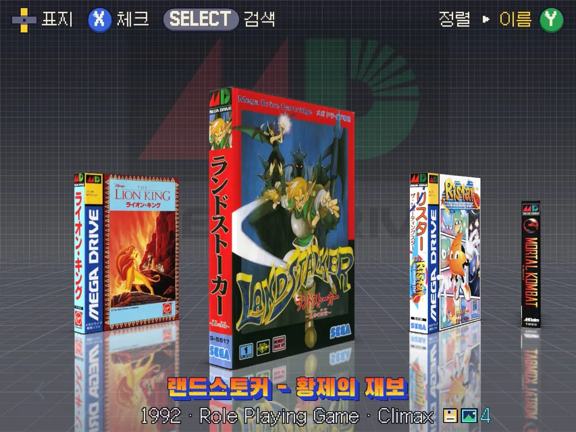

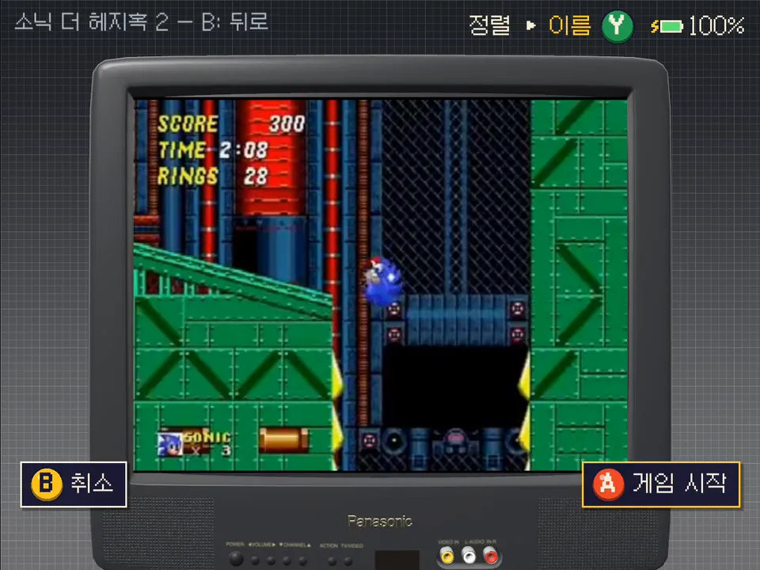
| 화면Screen | 조작Controls |
|---|---|
| 시스템 진열대System shelf | ←→ 기종 · A 들어가기 · Y 시스템 정렬(이름 · 회사 · 연도) · ↓ 부가 기능 줄(전자상가 · 앱 · 온라인 오락실)←→ consoles · A enter · Y sort systems (name, maker, year) · ↓ extras row (Mall, apps, Online Arcade) |
| 게임 목록Game list | ←→ 게임 · ▲▼ 표지 자세히 · A 케이스 열기 · Y 정렬(이름 → 연도 → 개발사 → 장르) · X 체크 · SELECT 검색←→ games · ▲▼ cover close-up · A open case · Y sort (name → year → developer → genre) · X check · SELECT search |
| 케이스 안Inside a case | A 게임 시작 · B 닫기 · → 영상 · ← 정보 · Y 세이브 · START 게임별 옵션A start · B close · → video · ← info · Y saves · START per-game options |
시스템 화면에서 뒤로를 누르면 "종료할까요?"를 묻습니다(처음 커서는 취소). 종료는 옵션 › 종료로도 합니다.Back on the system screen asks whether to quit (the cursor starts on Cancel). You can also quit from Options › Quit.
05 — BROWSE
게임 빨리 찾기 · 한꺼번에 다루기Finding and managing games fast
게임이 많아도 금방 찾고, 여러 개를 한 번에 즐겨찾기 · 삭제할 수 있습니다(0.7.9~).Find games fast in a big library, and favourite or delete several at once (0.7.9+).

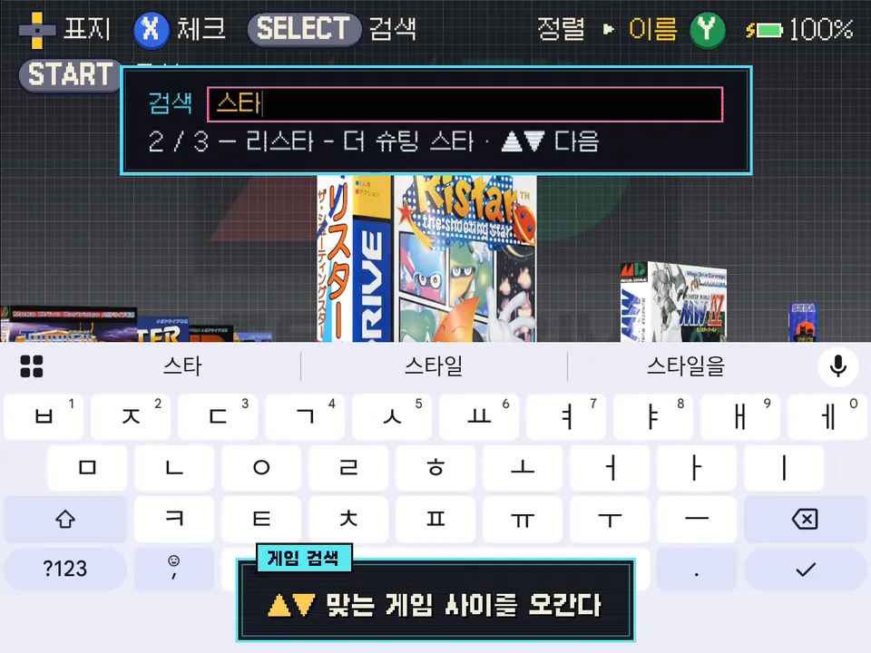

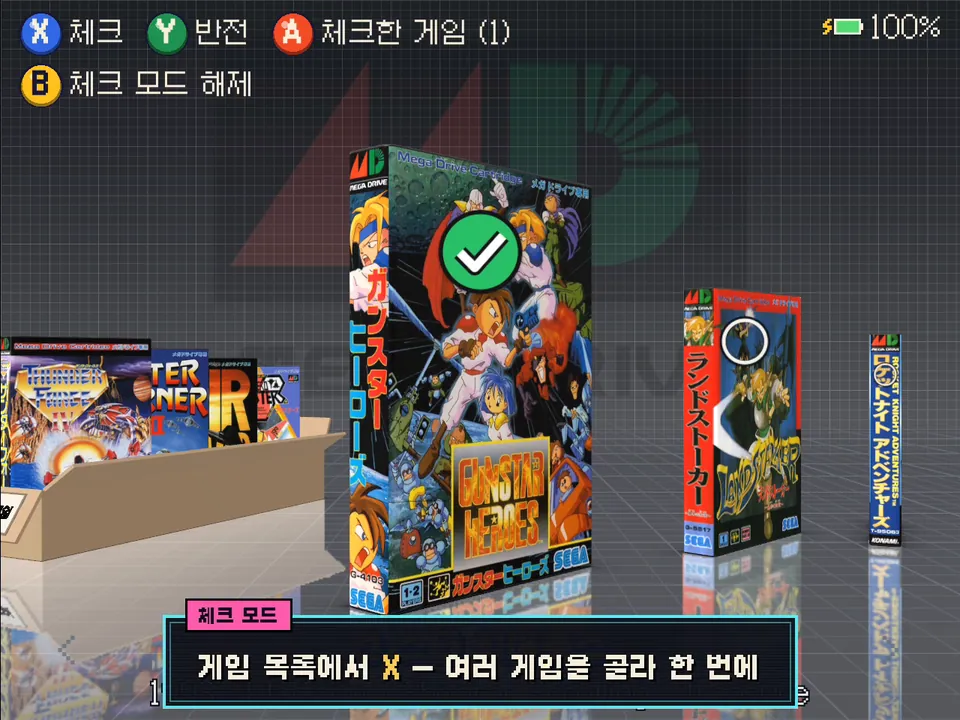

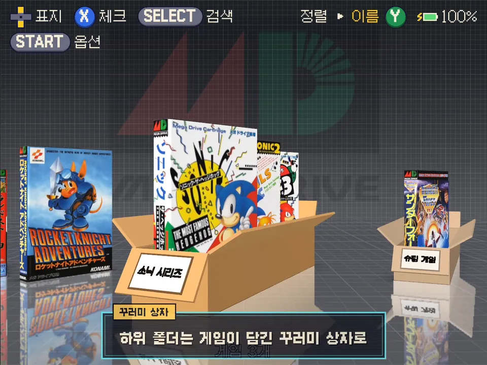
| 기능Feature | 이렇게How |
|---|---|
| 게임 검색Search | SELECT → 제목 두 글자 이상 → 이름순 첫 게임으로 이동, ▲▼ 로 다음 · 이전. 패드만 있는 기기 · 폰은 화면 키보드가 뜹니다. 닫으면 찾은 자리에 남습니다.SELECT → type two or more letters → jumps to the first match; ▲▼ for next/previous. Pad-only devices and phones get an on-screen keyboard. Closing leaves you there. |
| 체크 모드Check mode | X 체크 · Y 반전 · A 할 일(즐겨찾기 넣기 · 빼기 · 게임 삭제) · B 체크 모드 해제X check · Y invert · A actions (add to / remove from favourites, delete) · B leave check mode |
| 꾸러미 상자Bundle boxes | 하위 폴더(예: sfc/한글패치)가 상자로 섭니다. A 로 들어가고 B 로 나옵니다.Sub-folders (e.g. sfc/Korean) stand as boxes. A goes in, B comes out. |
| 즐겨찾기Favourites | 체크 → A → 즐겨찾기에 넣기. 즐겨찾기가 있으면 맨 앞에 "즐겨찾는 게임"(MY PICK) 시스템이 섭니다.Check → A → add to favourites. Favourites get their own MY PICK system at the front. |
| 정렬Sorting | Y 로 이름 → 출시 연도 → 개발사 → 장르. 시스템마다 따로 기억합니다.Y cycles name → year → developer → genre, remembered per system. |

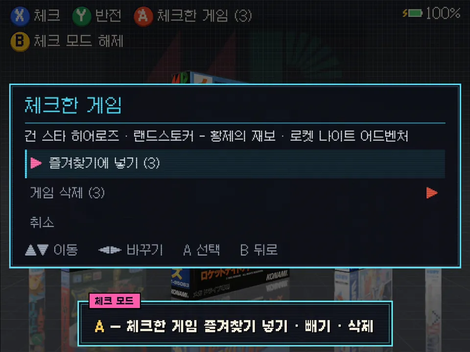
06 — EMULATORS
실행기(에뮬레이터) 고르기Choosing emulators
기본은 RetroArch 이고, 시스템 · 게임마다 단독 에뮬레이터를 고를 수 있습니다. 고를 수 있는 목록은 해방툴이 함께 보내 줍니다.RetroArch is the default; standalone emulators can be picked per system or per game. The choices arrive with the library from the Rom Tool.

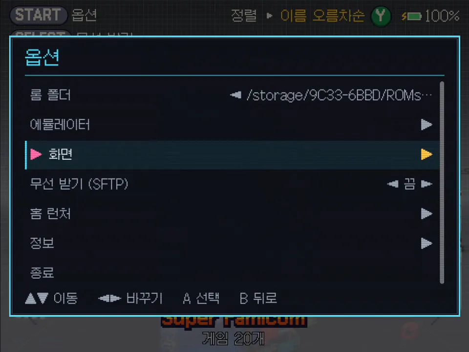

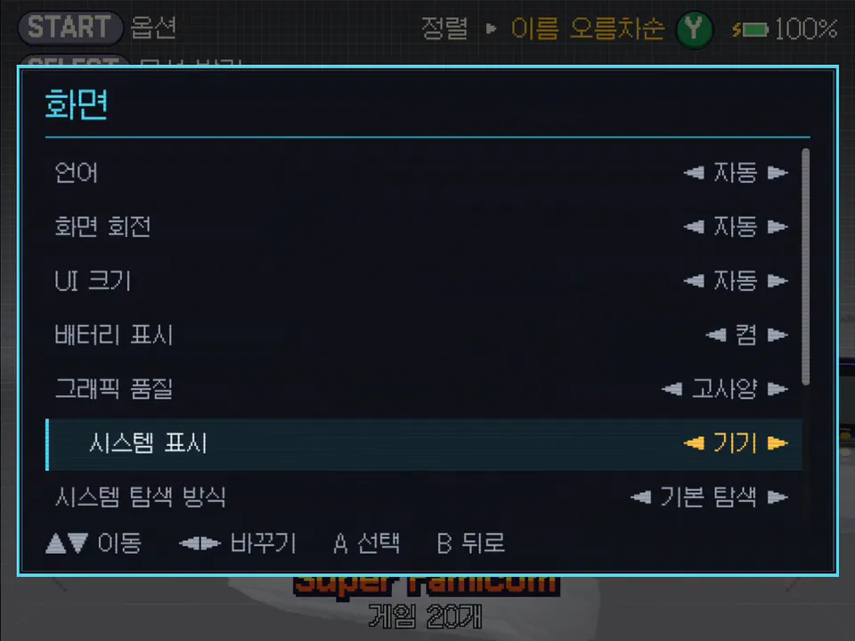
- 시스템마다 — 시스템 안에서 START → 에뮬레이터. 첫 줄 "(기본)"은 해방툴 기본값을 따릅니다.Per system — START inside a system → Emulator. The first "(default)" row follows the Rom Tool.
- 게임마다 — 케이스 안에서 START → 게임별 옵션 → 에뮬레이터. 롬 파일 이름 · 경로도 여기서 봅니다.Per game — START in a case → per-game options → Emulator; the ROM file and path are shown here too.
- 먼저 쓰는 차례 — 내가 고른 게임별 → 해방툴의 게임별(아케이드 롬셋) → 내가 고른 시스템 → 해방툴 기본 → 깔린 첫 후보. 런처에서 고른 값은 해방툴이 다시 보내도 지켜집니다.Priority — your per-game pick → the Rom Tool's per-game pick (arcade romsets) → your per-system pick → the Rom Tool default → the first installed candidate. Picks made in the launcher survive new exports.
- Windows — 옵션 › 에뮬레이터 경로에서 retroarch.exe를 한 번만 정하면 모든 시스템에 쓰입니다.Windows — set retroarch.exe once in Options › Emulator path and every system uses it.
해방레트로아크와 함께라면With HB RetroArch
해방레트로아크(com.haebang.retroarch)가 깔려 있으면 공식 RetroArch 보다 먼저 씁니다. 코어가 없으면 "코어 받는 중 — snes9x 45%"를 띄우고 알아서 받은 뒤 이어서 시작합니다(Wi-Fi 필요). 세이브 창의 "이 상태로 시작", 나갈 때 자동 상태저장, 온라인 오락실도 해방레트로아크가 있어야 됩니다.When HB RetroArch (com.haebang.retroarch) is installed it comes before the official RetroArch. Missing cores show "fetching core — snes9x 45%" and are downloaded, then the game starts (needs Wi-Fi). Starting from a save state, auto save-state on exit and the Online Arcade also need HB RetroArch.

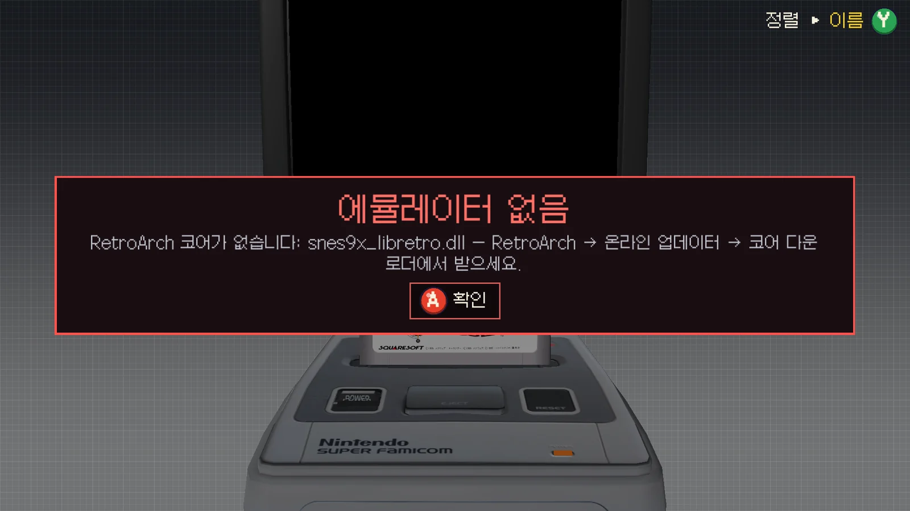
07 — SAVES
세이브 창 · 세이브 맞추기Save window and save sync
0.8.0 부터 세이브가 있는 게임은 케이스에 표시가 붙고, 케이스 안에서 Y 로 세이브 창을 엽니다(Android · RetroArch 게임).Since 0.8.0, games with saves get a badge on the case, and Y inside a case opens the save window (Android, RetroArch games).

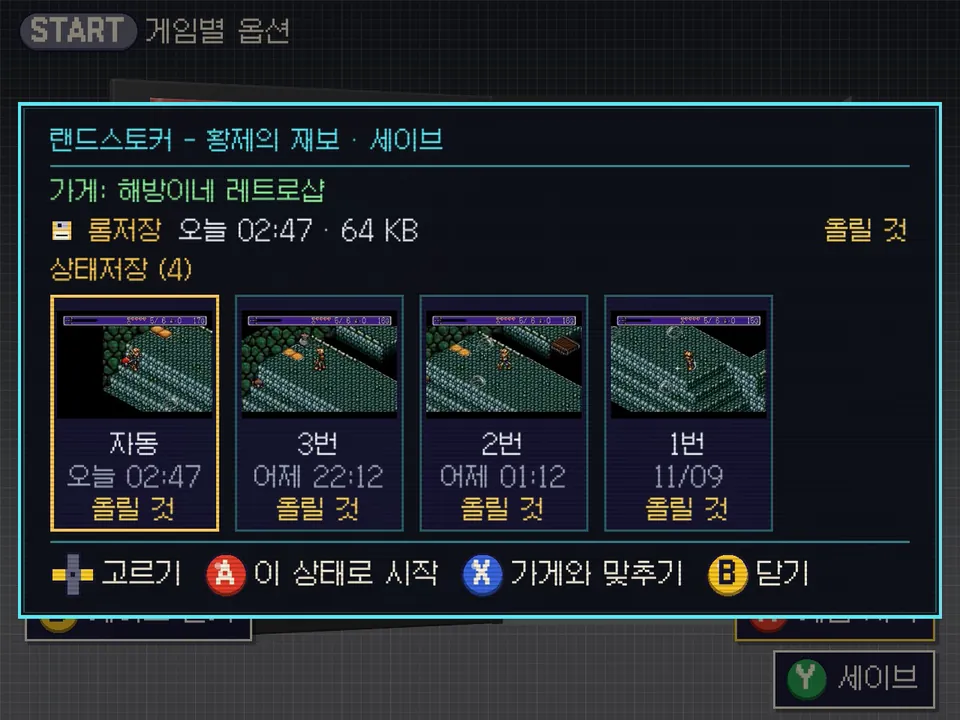

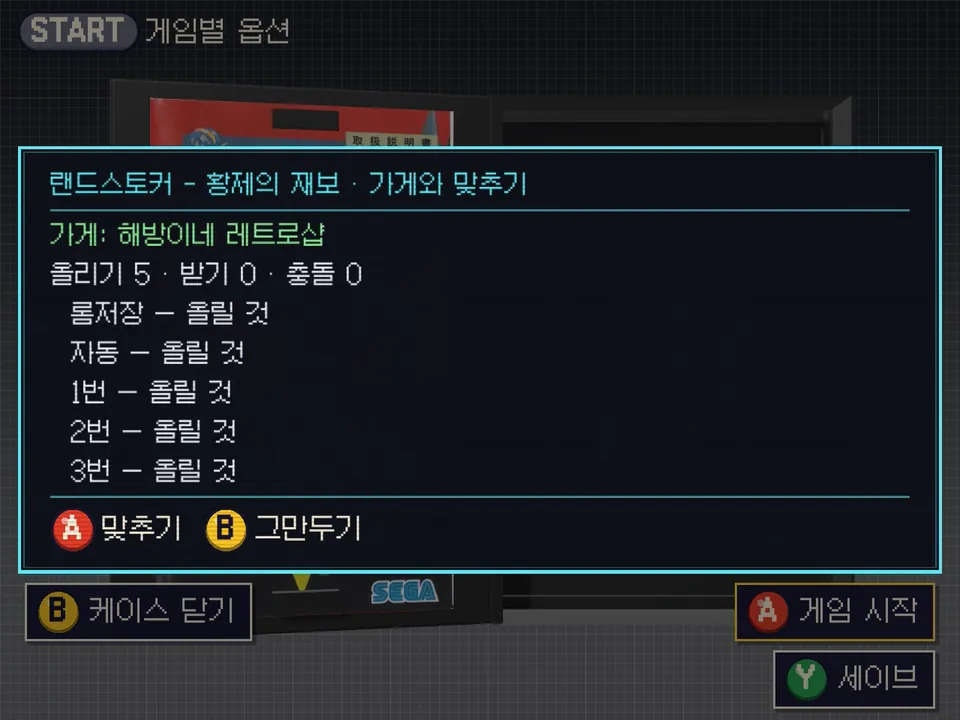
- 세이브 창 — ◄► 고르기 · A 이 상태로 시작 · B 닫기. 공식 RetroArch 라면 "빠른 메뉴 › 상태 불러오기에서 N 번" 안내와 함께 그냥 시작합니다.Save window — ◄► choose · A start from that state · B close. With the official RetroArch you get a "Quick Menu › Load State N" hint and a plain start.
- 나갈 때 자동 상태저장 — 옵션 › 에뮬레이터에서 켜면 홈 · 슬립 · 종료 때 저장해 두고, 다음엔 "자동" 카드로 이어 합니다(해방레트로아크).Auto save-state on exit — turn it on in Options › Emulator; leaving via home, sleep or quit saves, and the "auto" card resumes it (HB RetroArch).
- 세이브 맞추기 — 세이브 창에서 X. PC 해방툴 1.1.8 베타(PRO)가 가게를 열어 두고 전자상가에서 기기를 연결해 두면, 롬저장 · 상태저장을 PC 의 세이브 보관함과 맞춥니다. 충돌은 하나씩 "이 기기 / 가게" 중 고르고, 덮어쓰는 파일은 기기에 백업(게임마다 최근 3개)합니다.Save sync — X in the save window. With the PC Rom Tool 1.1.8 beta (PRO) shop open and this device paired in the Mall, cartridge saves and states sync with the PC's save vault. Conflicts are resolved one by one ("this device / shop"), and overwritten files are backed up on the device (last 3 per game).
08 — APPS
앱 · 프로그램 화면Apps and programs
0.8.0 — 시스템 진열대에서 ↓ → 안드로이드 앱(Windows 는 프로그램). 자주 쓰는 앱을 런처 안에서 바로 켭니다.0.8.0 — from the system shelf, ↓ → Android apps (Programs on Windows). Launch your usual apps without leaving.

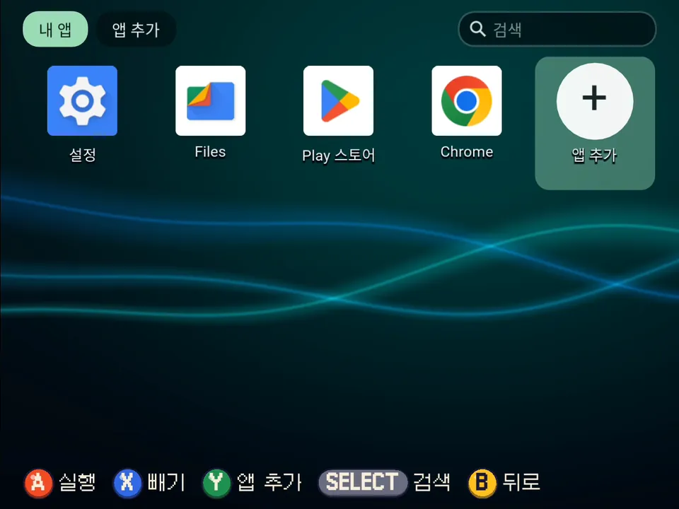

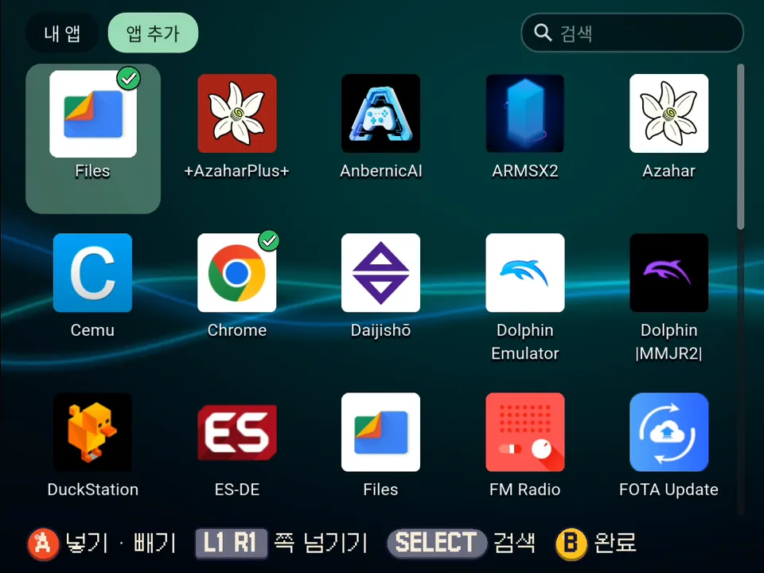
기본으로 설정 · 파일 · Play 스토어가 들어 있습니다. Windows 는 파일 찾아보기…(exe · lnk · bat)와 시작 메뉴 바로가기로 더합니다.Settings, Files and the Play Store are there by default. On Windows, add programs via Browse… (exe, lnk, bat) or Start-menu shortcuts.
09 — RETRO MALL
전자상가 — 가게 구경하고 가져오기Retro Mall — browse a shop and take games
PC 의 해방툴(PRO 베타 1.1.7~)이 연 가게에 해방런처로 들어가, 평소 진열대 그대로 구경하고 장바구니에 담아 가져옵니다. Android 0.7.8~ (Android 10 이상), Windows 0.7.9~.Step into a shop opened by the Rom Tool on a PC (PRO beta 1.1.7+), browse it like your own shelf and take games home in a cart. Android 0.7.8+ (Android 10+), Windows 0.7.9+.

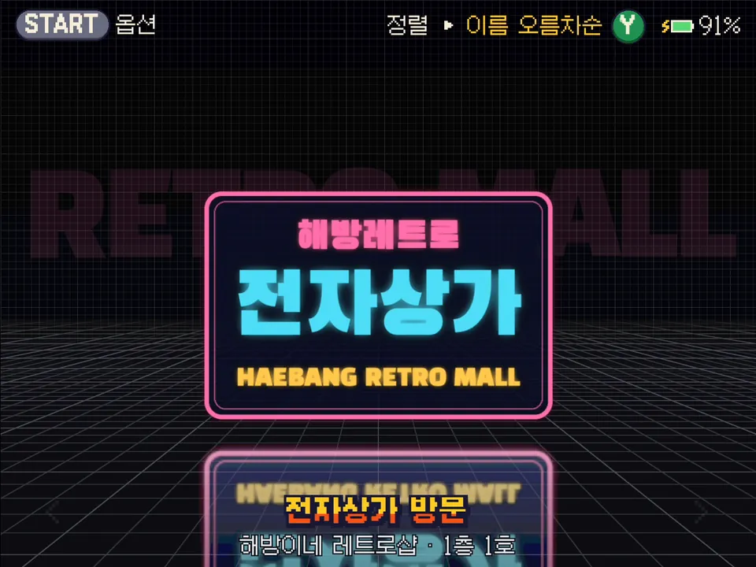

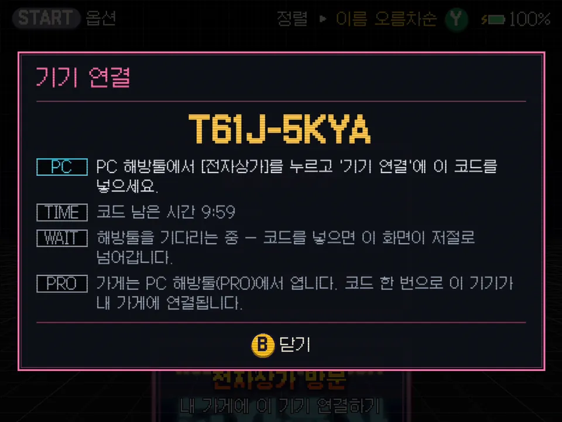

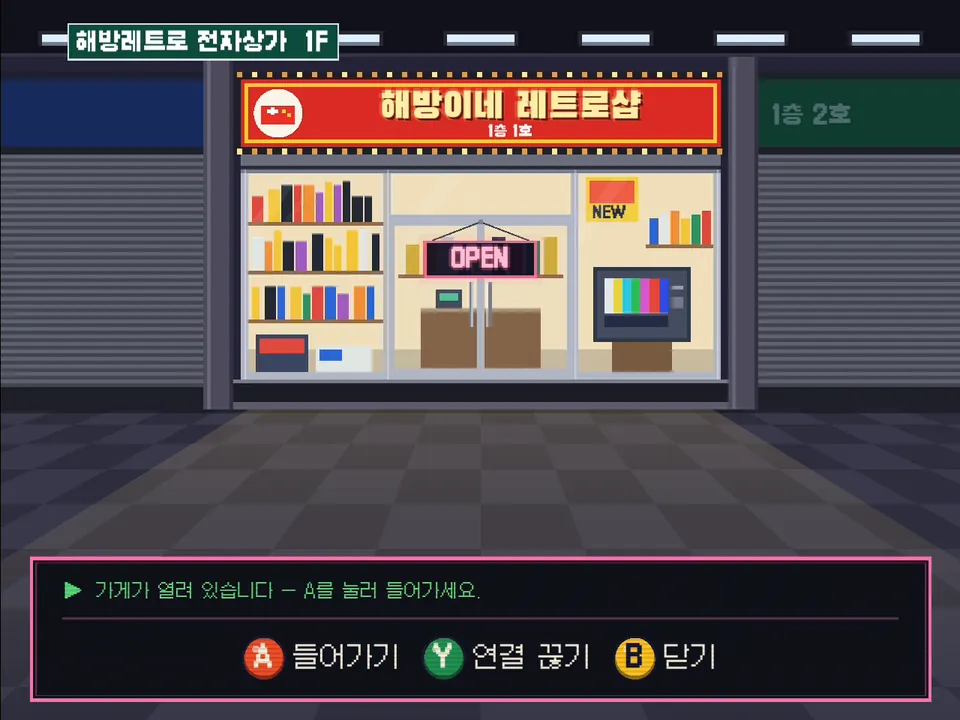

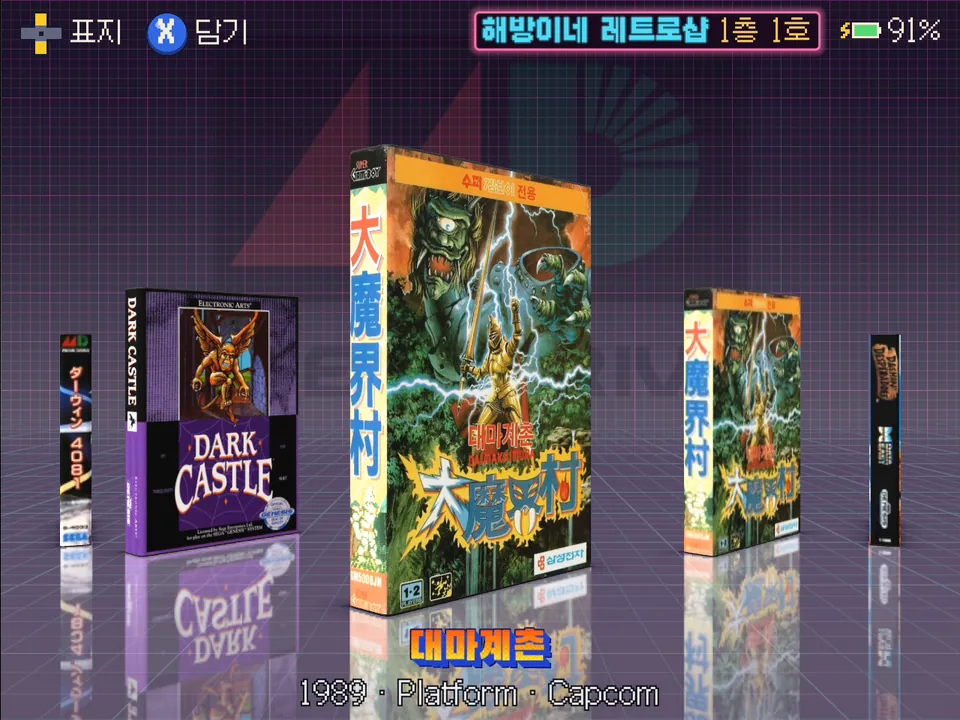

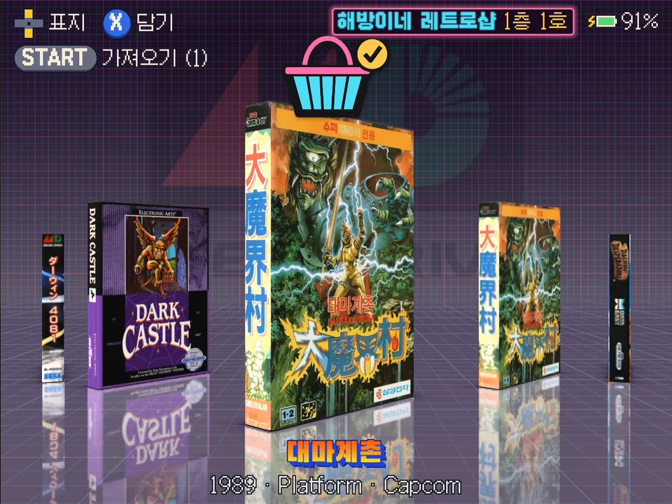

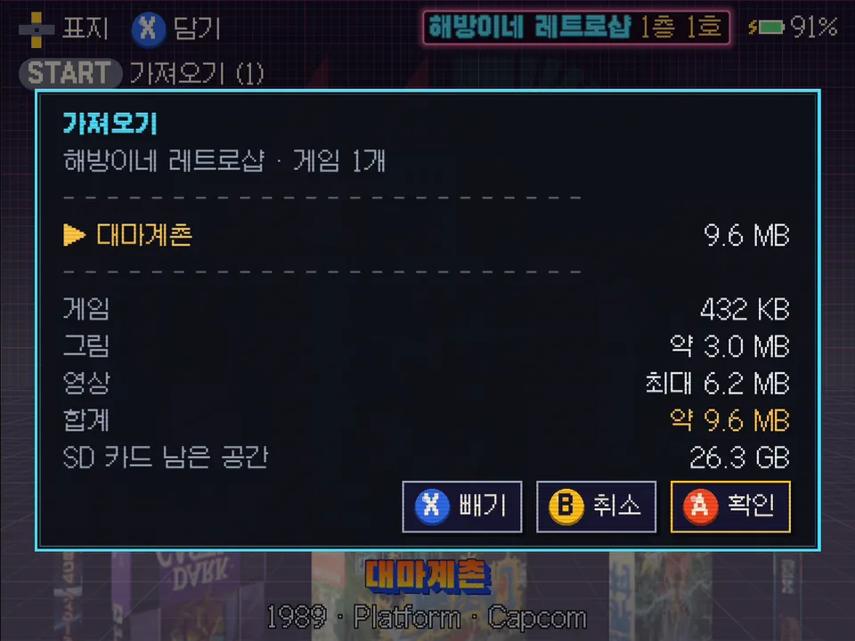

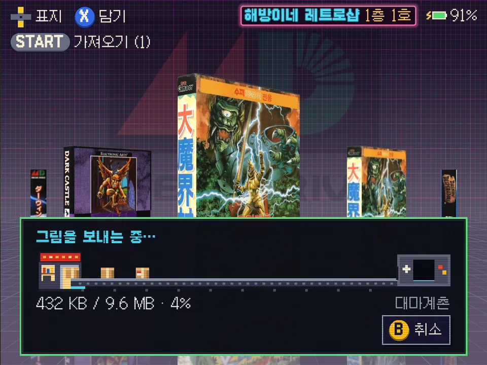

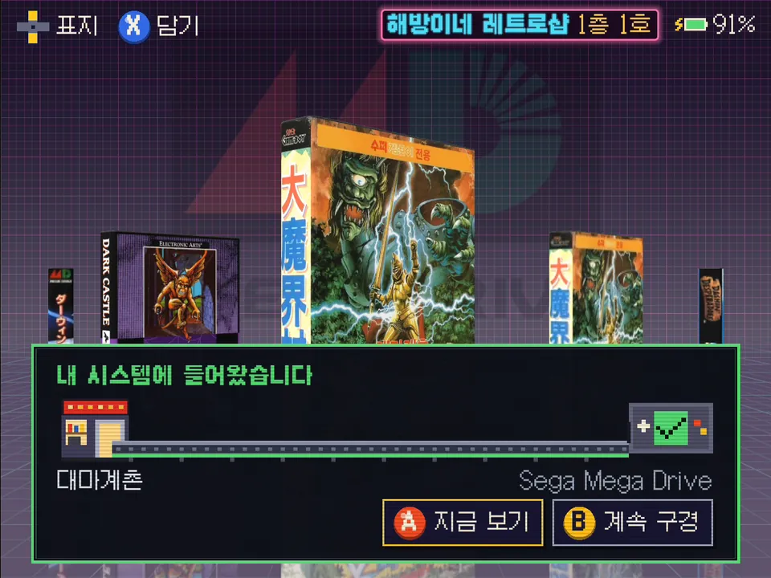
- 장바구니에는 여러 시스템을 함께, 200개까지 담습니다. 기기에 이미 있는 롬은 0 으로 셉니다.The cart holds up to 200 games across systems; ROMs already on the device count as zero.
- [멈추기]를 눌러도 받은 파일은 남고, 다시 가져오면 받은 것은 건너뜁니다.Stopping keeps what arrived; taking again skips it.
- Windows 손님 — 집 PC 의 가게에 다른 PC나 윈도우 휴대기가 들어오는 용도입니다(같은 PC 라면 해방툴의 "내 컴퓨터" 내보내기가 편합니다). 가져오기는 가게가 해방툴 1.1.8 이상이어야 합니다. PS Vita 게임은 Windows 로 가져올 수 없습니다.Windows guests — for another PC or a Windows handheld visiting your home PC's shop (on the same PC, the Rom Tool's "This PC" export is simpler). Taking games needs a shop on Rom Tool 1.1.8+. PS Vita games can't be taken to Windows.
10 — ONLINE ARCADE
온라인 오락실 — 친구와 같이Online Arcade — play with friends
0.8.0 — 멀리 있는 친구와 같은 게임을 함께 합니다. 누구나 씁니다(PRO · 해방툴 · 전자상가 연결 없이 런처끼리).0.8.0 — play the same game with a friend far away. Free for everyone — launcher to launcher, no PRO, Rom Tool or Mall pairing needed.

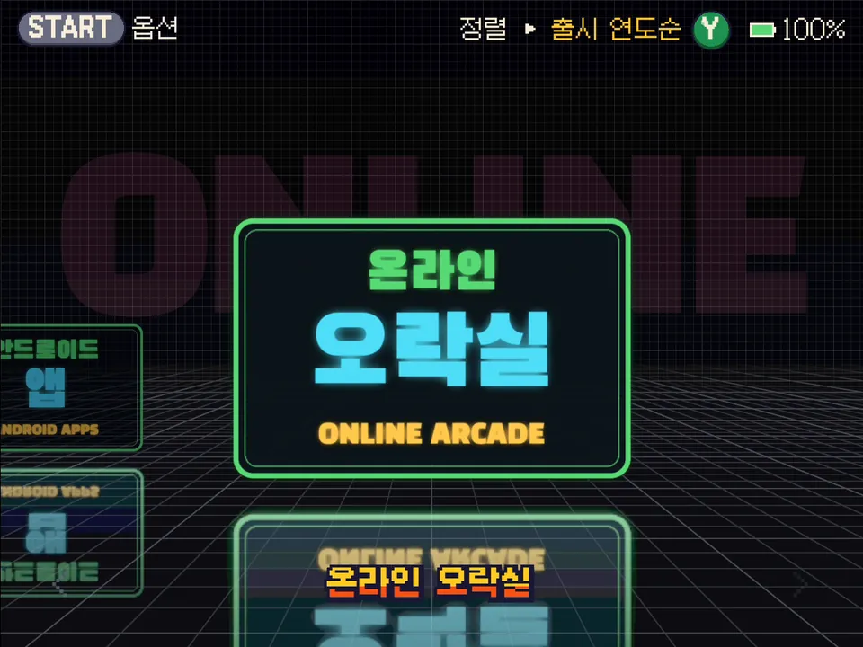

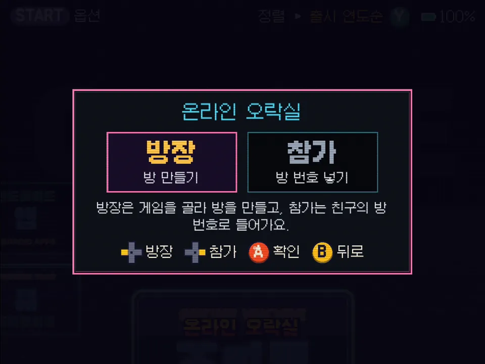

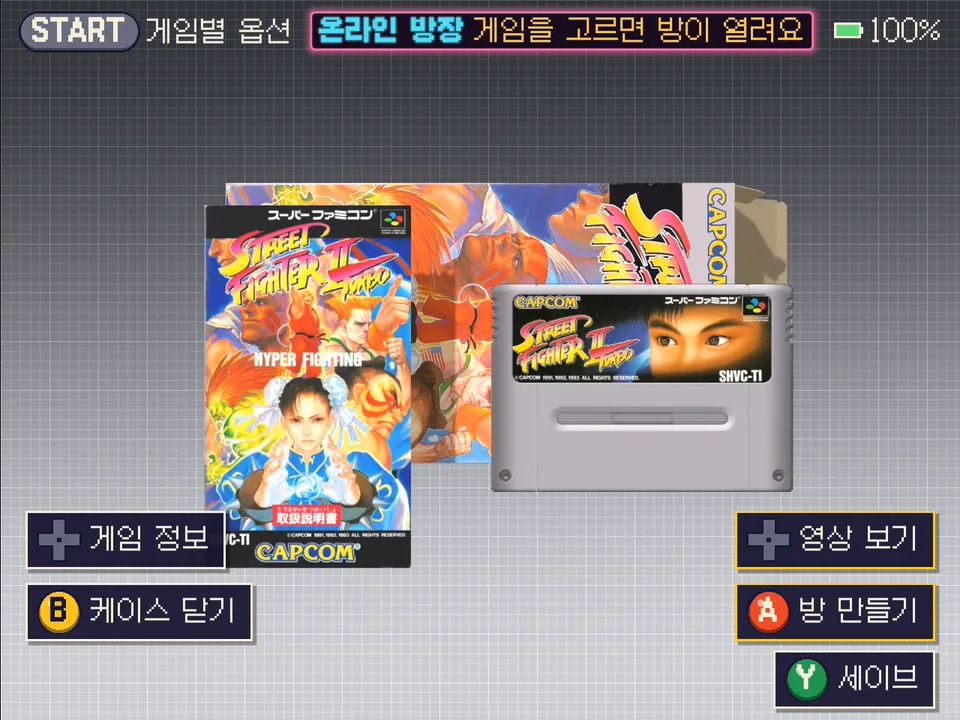

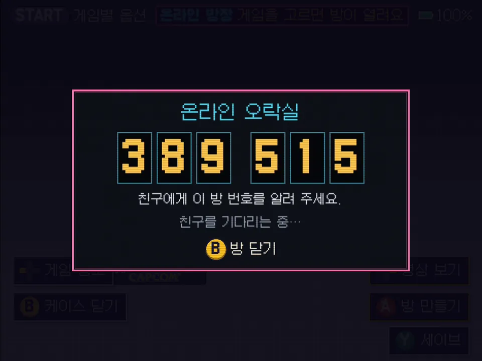

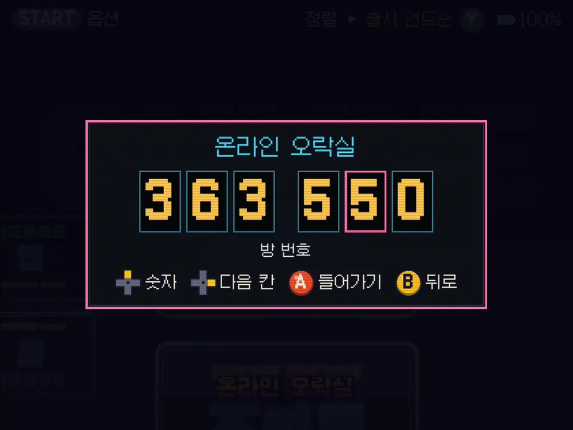
- 방장 — 진열대 ↓ → 온라인 오락실 → ← 방장. 넷플레이가 되는 게임만 서고, 케이스 안에서 A 방 만들기 → 큰 6자리 번호가 뜹니다.Host — shelf ↓ → Online Arcade → ← Host. Only netplay-ready games appear; A make a room inside a case shows a big 6-digit number.
- 참가 — → 참가 → 방 번호를 넣고 A. 같은 롬 · 코어 · 버전을 런처가 알아서 맞추고, 3초 뒤 함께 시작합니다.Join — → Join → enter the number and A. The launcher matches the ROM, core and version, and you start together three seconds later.
- 게임이 끝나면 A 한 판 더 · B 방 닫기(방장) / 나가기(참가).Afterwards: A one more round · B close room (host) / leave (guest).
| 누가Who | 필요한 것What you need |
|---|---|
| 모두Everyone | 해방런처 0.8.0 이상HB Launcher 0.8.0+ |
| AndroidAndroid | 해방레트로아크 1.22.2-hb16 이상(공식 RetroArch · 예전 버전으로는 방을 만들거나 들어갈 수 없음)HB RetroArch 1.22.2-hb16+ (the official RetroArch or older builds can't host or join) |
| WindowsWindows | RetroArch 1.22 (64비트)와 그 코어를 미리 설치RetroArch 1.22 (64-bit) and its cores installed |
되는 시스템: 아케이드(FinalBurn Neo · MAME) · 메가드라이브 · 슈퍼패미컴 · 패미컴 · PC엔진(HuCard). 자세한 코어 호환은 HB런처 페이지의 넷플레이 호환표에 있습니다.Supported: arcade (FinalBurn Neo, MAME), Mega Drive, Super Famicom, Famicom and PC Engine (HuCard). Core-level details are in the netplay table on the HB Launcher page.
11 — MORE
그 밖에 알아 두면 좋은 것Other handy things
지우기 · 정리 · 이어 하기처럼 자주 쓰는 편의 기능입니다.Everyday conveniences — deleting, tidying and resuming.
| 기능Feature | 내용What |
|---|---|
| 게임 삭제 (0.7.8~)Delete games (0.7.8+) | 게임별 옵션 → 게임 삭제, 여러 개는 체크 모드의 A. 롬 · 딸린 파일(cue/bin · m3u · CHD) · 그림 · 영상 · 목록을 함께 지우고 세이브는 남깁니다.Per-game options → Delete game, or A in check mode for several. Removes the ROM, companion files (cue/bin, m3u, CHD), art, video and the list entry — saves are kept. |
| 슬립 이어 하기 (0.7.8~)Sleep resume (0.7.8+) | RetroArch 게임 중 기기를 잠갔다 깨우면 하던 곳에서 이어집니다(Android, RetroArch 1.22 이상).Lock and wake the device mid-game and RetroArch carries on (Android, RetroArch 1.22+). |
| 그래픽 품질Graphics quality | 옵션 › 화면 — 저사양 · 표준 · 고사양(기본, 바닥 반사 · 광택). 바꾸면 다시 시작합니다.Options › Display — low, standard or high (default: floor reflections and gloss). Restart to apply. |
| 배터리 · 화면 회전 · UI 크기Battery, rotation, UI size | 옵션 › 화면에서 켜고 끕니다. 배터리는 30% 이하 노랑, 15% 이하 빨강.Toggle in Options › Display. Battery turns yellow at 30% and red at 15%. |
| 브랜드별 탐색Browse by brand | 옵션 › 화면 › 시스템 탐색 방식 — ↑↓ 회사, ←→ 기종Options › Display › system navigation — ↑↓ maker, ←→ console |
12 — TROUBLESHOOTING
문제 해결Troubleshooting
자주 묻는 것만 모았습니다. 영상은 해방레트로 유튜브의 해방런처 재생목록에 있습니다.The common ones. Videos are in the HB Launcher playlist on HAE-BANG RETRO on YouTube.
| 이럴 때When | 이렇게Try this |
|---|---|
| 게임이 하나도 안 보여요No games at all | 첫 화면에서 A 로 모든 파일 접근을 허용하고, 해방툴로 내보냈는지 확인한 뒤 옵션 › 정보 › 라이브러리 다시 읽기.Press A on the first screen to allow All files access, make sure you exported from the Rom Tool, then Options › Info › Reload library. |
| 일부 게임만 보여요Only some games show | 이 기기에 롬이 없는 게임은 숨깁니다. 롬 폴더를 확인하거나 옵션 › 화면 › 롬 없는 게임 표시를 켭니다.Games without a ROM on this device are hidden. Check the ROM folder, or turn on Options › Display › show games without ROMs. |
| 예전 목록이 보여요An old list shows | SD 카드와 내부 저장소 양쪽에 HBLauncher 폴더가 있는 경우입니다. 해방툴 1.1.5 이상으로 다시 내보내면 정리됩니다.There's an HBLauncher folder on both SD and internal storage. Re-export with Rom Tool 1.1.5+ to tidy it. |
| 무선으로 보냈는데 롬이 SD 카드에 있어요Sent over Wi-Fi but ROMs are on SD | 해방툴 1.1.6 + 런처 0.7.7 이상이면 저장소 줄에 SD 카드가 나옵니다. 안 나오면 해방툴 시스템 줄의 [직접 지정]에 SD 경로를 넣습니다.With Rom Tool 1.1.6 + launcher 0.7.7 the SD card appears in the storage row. If not, put the SD path in [Custom] on the system row. |
| 빨간 줄 · 에뮬레이터 없음Red row / no emulator | 그 에뮬레이터 앱을 설치하거나 옵션 › 에뮬레이터에서 다른 후보를 고릅니다.Install that emulator app, or pick another in Options › Emulator. |
| RetroArch 가 검은 화면에서 멈춰요RetroArch stops on a black screen | 대개 코어가 없는 것입니다. 공식판은 RetroArch 온라인 업데이터 › 코어 다운로더에서 받고, 해방레트로아크는 런처가 알아서 받습니다.Usually a missing core. Official RetroArch: Online Updater › Core Downloader. HB RetroArch: the launcher fetches it. |
| "게임이 바로 닫혔습니다""The game closed right away" | 코어 · 롬셋 · 바이오스를 확인하거나 다른 코어를 고릅니다.Check the core, romset and BIOS, or try another core. |
| 단독 에뮬레이터가 롬을 못 열어요A standalone emulator can't open the ROM | 처음 묻는 "롬 폴더 접근 권한"을 허용하거나, 그 에뮬레이터 앱에 모든 파일 접근을 줍니다(cue/bin · m3u 는 후자가 확실).Allow the "ROM folder access" prompt, or give that emulator All files access (more reliable for cue/bin and m3u). |
| RetroArch 메뉴 한글이 ?? 로 보여요RetroArch menu shows ?? instead of Korean | 해방레트로아크를 최신(hb16)으로 올립니다.Update HB RetroArch to the latest (hb16). |
| 슬립에서 깨우면 RetroArch 가 꺼져요RetroArch closes after sleep | "스레드된 비디오" 설정 때문입니다. 공식판은 그 설정을 끄고, 해방레트로아크(hb7~)는 고쳐져 있습니다.It's the "threaded video" setting — turn it off in the official build; HB RetroArch (hb7+) has it fixed. |
| 패드 A/B 가 반대예요A and B are swapped | 옵션 › 화면 › A/B · X/Y 바꾸기.Options › Display › swap A/B and X/Y. |